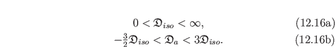

Implemented models
A number of analytic and numeric models are supported within relax.
These cover single quantum (SQ) CPMG-type, combined proton-heteronuclear single quantum (SQ), zero quantum (ZQ), double quantum (DQ) and multi quantum (MQ) CPMG-type experiments, and
R1ρ-type.
If the model you are interested in is not available, please see Section 11.11 on page ![[*]](crossref.png) for how you can add new models to relax.
for how you can add new models to relax.
Models which are independent of the experiment type include:
- `R2eff':
- This is the model used to determine the
R2eff or
R1ρ values and errors required as the base data for all other models.
See Section 11.2.1 on page .
- `No Rex':
- This is the model for no chemical exchange being present.
See Section 11.2.2 on page .
For the SQ CPMG-type experiments, the analytic models currently supported are:
- `LM63':
- The original Luz and Meiboom (1963) 2-site fast exchange equation with parameters
{R20,..., Φex, kex}.
See Section 11.3.1 on page .
- `LM63 3-site':
- The original Luz and Meiboom (1963) 3-site fast exchange equation with parameters
{R20,..., Φex, B, kB, Φex, C, kC}.
The equations of O'Connell et al. (2009) can be used to approximately convert the parameters
{Φex, B, kB, Φex, C, kC} to more biologically relevant parameters.
See Section 11.3.2 on page .
- `CR72':
- The reduced Carver and Richards (1972) 2-site equation for most time scales whereby the simplification
R2A0 = R2B0 is assumed.
It has the parameters
{R20,..., pA, Δω, kex}.
See Section 11.3.4 on page .
- `CR72 full':
- The full Carver and Richards (1972) 2-site equation for most time scales with parameters
{R2A0, R2B0,..., pA, Δω, kex}.
See Section 11.3.3 on page .
- `IT99':
- The Ishima and Torchia (1999) 2-site model for all time scales with
pA  pB and with parameters
{R20,..., pA, Δω, τex}.
See Section 11.3.5 on page .
- `TSMFK01':
- The Tollinger et al. (2001) 2-site very-slow exchange model for time scales within range of microsecond to second time scale.
Applicable in the limit of slow exchange, when
| R2A0 - R2B0|
 kAB, kBA 1/τCPMG.
2*τCPMG is the time between successive 180 degree pulses.
Parameters are
{R2A0,..., Δω, kAB}.
See Section 11.3.6 on page .
kAB, kBA 1/τCPMG.
2*τCPMG is the time between successive 180 degree pulses.
Parameters are
{R2A0,..., Δω, kAB}.
See Section 11.3.6 on page .
- `B14':
- The reduced Baldwin (2014) 2-site exact solution equation for all time scales whereby the simplification
R2A0 = R2B0 is assumed.
It has the parameters
{R20,..., pA, Δω, kex}.
See Section 11.3.8 on page .
- `B14 full':
- The full Baldwin (2014) 2-site exact equation for all time scales with parameters
{R2A0, R2B0,..., pA, Δω, kex}.
See Section 11.3.7 on page .
For the SQ CPMG-type experiments, the numeric models currently supported are:
- `NS CPMG 2-site expanded':
- A model for 2-site exchange expanded using Maple by Nikolai Skrynnikov (Tollinger et al., 2001).
It has the parameters
{R20,..., pA, Δω, kex}.
See Section 11.4.1 on page .
- `NS CPMG 2-site 3D':
- The reduced model for 2-site exchange using 3D magnetisation vectors whereby the simplification
R2A0 = R2B0 is assumed.
It has the parameters
{R20,..., pA, Δω, kex}.
See Section 11.4.3 on page .
- `NS CPMG 2-site 3D full':
- The full model for 2-site exchange using 3D magnetisation vectors with parameters
{R2A0, R2B0,..., pA, Δω, kex}.
See Section 11.4.2 on page .
- `NS CPMG 2-site star':
- The reduced model for 2-site exchange using complex conjugate matrices whereby the simplification
R2A0 = R2B0 is assumed.
It has the parameters
{R20,..., pA, Δω, kex}.
See Section 11.4.5 on page .
- `NS CPMG 2-site star full':
- The full model for 2-site exchange using complex conjugate matrices with parameters
{R2A0, R2B0,..., pA, Δω, kex}.
See Section 11.4.4 on page .
For the combined proton-heteronuclear SQ, ZQ, DQ and MQ CPMG-type experiments (MMQ - or multi-multiple quantum), the analytic models currently supported are:
- `MMQ CR72':
- The Carver and Richards (1972) 2-site model for most time scales expanded for MMQ CPMG data by Korzhnev et al. (2004a).
It has the parameters
{R20,..., pA, Δω, ΔωH, kex}.
See Section 11.5.1 on page .
For the combined proton-heteronuclear SQ, ZQ, DQ and MQ CPMG-type experiments (MMQ - or multi-multiple quantum), the numeric models currently supported are:
- `NS MMQ 2-site':
- The model for 2-site exchange whereby the simplification
R2A0 = R2B0 is assumed.
It has the parameters
{R20,..., pA, Δω, ΔωH, kex}.
See Section 11.6.1 on page .
- `NS MMQ 3-site linear':
- The model for 3-site exchange linearised with
kAC = kCA = 0 whereby the simplification
R2A0 = R2B0 = R2C0 is assumed.
It has the parameters {
R20, ...,
pA,
pB,
ΔωAB,
ΔωBC,
ΔωHAB,
ΔωHBC,
kexAB,
kexBC}.
See Section 11.6.2 on page .
- `NS MMQ 3-site':
- The model for 3-site exchange whereby the simplification
R2A0 = R2B0 = R2C0 is assumed.
It has the parameters {
R20, ...,
pA,
pB,
ΔωAB,
ΔωBC,
ΔωHAB,
ΔωHBC,
kexAB,
kexBC,
kexAC}.
See Section 11.6.3 on page .
For the
R1ρ-type experiments, the analytic models currently supported are:
- `M61':
- The Meiboom (1961) 2-site fast exchange equation for on-resonance data with parameters
{R1ρ',..., Φex, kex}.
See Section 11.7.1 on page .
- `DPL94':
- The Davis et al. (1994) extension of the `M61' model for off-resonance data with parameters
{R1ρ',..., Φex, kex}.
See Section 11.7.3 on page .
- `M61 skew':
- The Meiboom (1961) 2-site equation for all time scales with
pA pB and with parameters
{R1ρ',..., pA, Δω, kex}.
This model is disabled by default in the dispersion auto-analysis.
See Section 11.7.2 on page .
- `TP02':
- The Trott and Palmer (2002) 2-site equation for all time scales with
pA pB and with parameters
{R1ρ',..., pA, Δω, kex}.
See Section 11.7.4 on page .
- `TAP03':
- The Trott et al. (2003) off-resonance 2-site analytic equation for all time scales with the weak condition
pA pB and with parameters
{R1ρ',..., pA, Δω, kex}.
- `MP05':
- The Miloushev and Palmer (2005) off-resonance 2-site equation for all time scales with parameters
{R1ρ',..., pA, Δω, kex}.
See Section 11.7.6 on page .
For the
R1ρ-type experiments, the numeric models currently supported are:
- `NS R1rho 2-site':
- The model for 2-site exchange using 3D magnetisation vectors.
It has the parameters
{R1ρ',..., pA, Δω, kex}.
See Section 11.8.1 on page .
- `NS
R1ρ 3-site linear':
- The model for 3-site exchange linearised with
kAC = kCA = 0 whereby the simplification
R1ρA' = R1ρB' = R1ρC' is assumed.
It has the parameters {
R1ρ', ...,
pA,
pB,
ΔωAB,
ΔωBC,
kexAB,
kexBC}.
See Section 11.8.3 on page .
- `NS
R1ρ 3-site':
- The model for 3-site exchange whereby the simplification
R1ρA' = R1ρB' = R1ρC' is assumed.
It has the parameters {
R1ρ', ...,
pA,
pB,
ΔωAB,
ΔωBC,
kexAB,
kexBC,
kexAC}.
See Section 11.8.2 on page .
The relax user manual (PDF), created 2014-11-24.